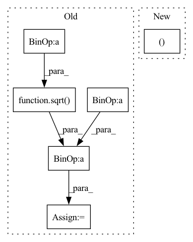

Pattern ID :1147

Before Change
def step(self, x: Tensor, fn: Callable, sigma: float, sigma_next: float) -> Tensor:
// Sigma steps
r = self.rho
sigma_up = sqrt(sigma_next ** 2 * (sigma ** 2 - sigma_next ** 2) / sigma ** 2)
sigma_down = sqrt(sigma_next ** 2 - sigma_up ** 2)
sigma_mid = ((sigma ** (1 / r) + sigma_down ** (1 / r)) / 2) ** r
// Derivative at sigma (∂x/∂sigma)
d = (x - fn(x, sigma=sigma)) / sigma
// Denoise to midpoint
After Change
def step(self, x: Tensor, fn: Callable, sigma: float, sigma_next: float) -> Tensor:
// Sigma steps
sigma_up, sigma_down, sigma_mid = self.get_sigmas(sigma, sigma_next)
// Derivative at sigma (∂x/∂sigma)
d = (x - fn(x, sigma=sigma)) / sigma
// Denoise to midpoint
In pattern: SUPERPATTERN
Frequency: 3
Non-data size: 6
Instances
Fragment ID: 5801561
Project Name: archinetai/audio-diffusion-pytorch
Commit Name: 85549a6474605c11b6fb15af9645e81e238468de
Time: 2022-08-17
Author: flavio.schneider.97@gmail.com
File Name: audio_diffusion_pytorch/diffusion.py
M Class Name: ADPM2Sampler
N Class Name: ADPM2Sampler
M Method Name: step(5)
N Method Name: step(5)
M Parent Class: Sampler
N Parent Class: Sampler
M File Name: audio_diffusion_pytorch/diffusion.py
N File Name: audio_diffusion_pytorch/diffusion.py
M Start Line: 139
M End Line: 142
N Start Line: 157
N End Line: 157
'>
Before Change
P = Q - 1.0
mu = n*P
var = n*P*Q
g1 = (Q+P)/sqrt(n*P*Q)
g2 = (1.0 + 6*P*Q) / (n*P*Q)
return mu, var, g1, g2
After Change
def _stats(self, n, p):
return(
_boost._nbinom_mean(n, p),
_boost._nbinom_variance(n, p),
_boost._nbinom_skewness(n, p),
_boost._nbinom_kurtosis_excess(n, p),
)
'>
Fragment ID: 5802233
Project Name: scipy/scipy
Commit Name: 60f42dbd108f66eabf45909250432cc425e7e00f
Time: 2021-01-02
Author: nicholas.bgp@gmail.com
File Name: scipy/stats/_discrete_distns.py
M Class Name: nbinom_gen
N Class Name: nbinom_gen
M Method Name: _stats(3)
N Method Name: _stats(3)
M Parent Class: rv_discrete
N Parent Class: rv_discrete
M File Name: scipy/stats/_discrete_distns.py
N File Name: scipy/stats/_discrete_distns.py
M Start Line: 303
M End Line: 309
N Start Line: 299
N End Line: 304
'>
Before Change
batch_log_snr = repeat(log_snr, " -> b", b = x.shape[0])
pred_noise = self.denoise_fn(x, batch_log_snr)
model_mean = sqrt(squared_alpha_next / squared_alpha) * (x - c * sqrt(squared_sigma) * pred_noise)
posterior_variance = squared_sigma_next * c
return model_mean, posterior_variance
After Change
squared_alpha, squared_alpha_next = log_snr.sigmoid(), log_snr_next.sigmoid()
squared_sigma, squared_sigma_next = (-log_snr).sigmoid(), (-log_snr_next).sigmoid()
alpha, sigma, alpha_next = map(sqrt, (squared_alpha, squared_sigma, squared_alpha_next))
batch_log_snr = repeat(log_snr, " -> b", b = x.shape[0])
pred_noise = self.denoise_fn(x, batch_log_snr)
'>
Fragment ID: 5801579
Project Name: lucidrains/denoising-diffusion-pytorch
Commit Name: 582bfe275b98528f957268daa876694100f2d16c
Time: 2022-06-08
Author: lucidrains@gmail.com
File Name: denoising_diffusion_pytorch/continuous_time_gaussian_diffusion.py
M Class Name: ContinuousTimeGaussianDiffusion
N Class Name: ContinuousTimeGaussianDiffusion
M Method Name: p_mean_variance(4)
N Method Name: p_mean_variance(4)
M Parent Class: nn.Module
N Parent Class: nn.Module
M File Name: denoising_diffusion_pytorch/continuous_time_gaussian_diffusion.py
N File Name: denoising_diffusion_pytorch/continuous_time_gaussian_diffusion.py
M Start Line: 175
M End Line: 183
N Start Line: 174
N End Line: 194